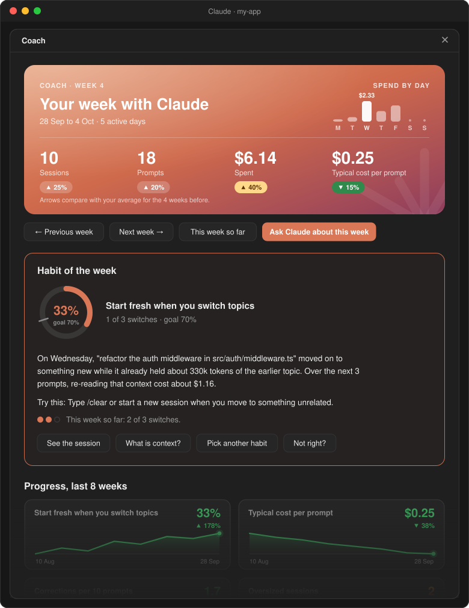
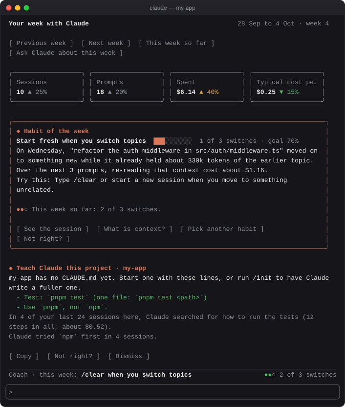
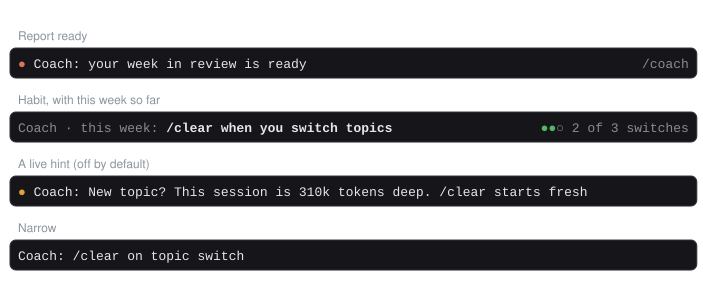

One habit at a time
Each week coach picks the habit that would help you most, shows the session it came from and what it cost, and tells you what to try. It sticks with a habit for two weeks and retires it once you've got it.
A mod for Claude Code
coach reads the sessions you've already had, picks the one habit that would help you most, and tracks how you're doing. Plus tips at your level, and CLAUDE.md lines and skills worth making.


Most advice about Claude Code is generic. coach's comes from your own sessions, so every tip shows you where it came from.
Each week coach picks the habit that would help you most, shows the session it came from and what it cost, and tells you what to try. It sticks with a habit for two weeks and retires it once you've got it.
How to run the tests, the package manager it gets wrong, the corrections you keep making: CLAUDE.md lines ready to copy, with the evidence. Suggestions only; coach never writes your CLAUDE.md.
A prompt you keep typing in nearly the same words becomes a suggested skill, with a template and the follow-up you usually add. "Make it a skill" puts the request in the prompt box for you.
Cost per prompt, corrections, oversized sessions and your habit, week by week. Finished weeks are kept, so the history survives Claude Code deleting old logs.
Beginners see the basics; experienced users see advanced tips. Every tip is backed by your own sessions and retires once you've taken it up.
It reads the logs Claude Code already keeps and makes no network calls. Grading prompts with a model is opt-in, about a cent a week with Haiku.
Open the report whenever you like. The rest of the week, a line above the prompt keeps your habit in view.

In a Claude Code terminal session, type this at the prompt:
/plugin install coach --marketplace aseem-upadhyay/qol-mods
Answer y to add the marketplace, then pick the user scope so coach loads in every session.
That's it. Your first report is ready a few seconds after your next session starts, because coach reads the logs you already have. Type /coach to open it.
Needs macOS or Linux and python3 3.9 or newer. Windows isn't supported yet.